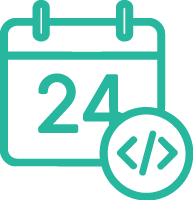

今日の年月日を表示

- プロンプト例
JavaSciprで今日の年月日を表示する記述を解説して
基本：今日の日付を取得する
const today = new Date();
これで 現在の日時 が today に入ります。
年・月・日をそれぞれ取得する
const year = today.getFullYear(); // 年（例: 2026） const month = today.getMonth() + 1; // 月（0～11なので +1 する） const day = today.getDate(); // 日（1～31）
ポイント
- getMonth() は 0が1月、11が12月 なので、+1 が必須です。
年月日を表示する（コンソール）
console.log(`${year}年${month}月${day}日`);
Webページに表示する場合（HTML + JavaScript）
HTML
<p id="today"></p>
JavaScript
const today = new Date(); const year = today.getFullYear(); const month = today.getMonth() + 1; const day = today.getDate(); document.getElementById("today").textContent = `${year}年${month}月${day}日`;
画面に 2026年2月9日 のように表示されます。
よく使う短縮版（1行）
const today = new Date(); console.log( `${today.getFullYear()}年${today.getMonth()+1}月${today.getDate()}日` );
0埋め（02月・09日など）したい場合
const today = new Date(); const year = today.getFullYear(); const month = String(today.getMonth() + 1).padStart(2, '0'); const day = String(today.getDate()).padStart(2, '0'); console.log(`${year}/${month}/${day}`);
【出力例】
2026/02/09
「今日の年月日＋曜日」を表示
- プロンプト例
曜日も表示したい
基本コード（日本語の曜日つき）
const today = new Date(); const year = today.getFullYear(); const month = today.getMonth() + 1; const day = today.getDate(); const week = ['日', '月', '火', '水', '木', '金', '土']; const weekday = week[today.getDay()]; console.log(`${year}年${month}月${day}日（${weekday}）`);
【出力例】
2026年2月9日（水）
曜日の仕組みを解説
today.getDay()
これは 曜日を数字で返します。
| 数値 | 曜日 |
|---|---|
| 0 | 日 |
| 1 | 月 |
| 2 | 火 |
| 3 | 水 |
| 4 | 木 |
| 5 | 金 |
| 6 | 土 |
これを配列で変換しています。
const week = ['日', '月', '火', '水', '木', '金', '土'];
Webページに表示する場合
HTML
<p id="today"></p>
JavaScript
const today = new Date(); const year = today.getFullYear(); const month = today.getMonth() + 1; const day = today.getDate(); const week = ['日', '月', '火', '水', '木', '金', '土']; const weekday = week[today.getDay()]; document.getElementById("today").textContent = `${year}年${month}月${day}日（${weekday}）`;
0埋め + 曜日（実務でよく使う形）
const today = new Date(); const y = today.getFullYear(); const m = String(today.getMonth() + 1).padStart(2, "0"); const d = String(today.getDate()).padStart(2, "0"); const week = ['日', '月', '火', '水', '木', '金', '土']; const w = week[today.getDay()]; console.log(`${y}/${m}/${d} (${w})`);
【出力例】
2026/02/09 (水)